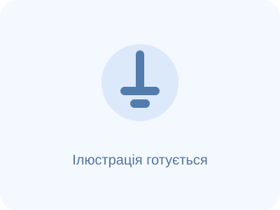

ТРІЗ навчання / Старт TRIZ / Задача 29
3–4 класи · Задача 29/40
Човник для вантажу
💡
Ситуація
Паперовий човник має перевезти якомога більше ґудзиків і не потонути.
Ваше завдання
Яку форму корпусу та розподіл вантажу обрати?
Поміркуйте
Що потрібно покращити? Що цьому заважає? Які предмети або властивості вже можна використати?
Намалюйте або створіть безпечну модель свого рішення.
Напрям пошуку (підказка)
Плавучість. Це лише один із можливих підходів.

Для цієї задачі передбачено окреме зображення: images/task-29.webp.